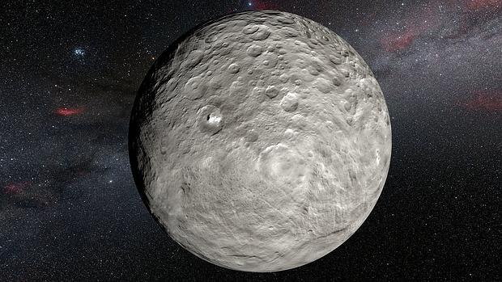

¿Que es Ceres?
Ceres es un planeta enano y el objeto astronómico más grande del cinturón de asteroides, región del sistema solar que se encuentra entre las órbitas de Marte y Júpiter; su diámetro de aproximadamente 945 km lo convierte en el trigésimo tercer objeto conocido más grande del sistema solar. Se estima que su masa es un tercio de la masa total del cinturón de asteroides, siendo el único objeto de dicho cinturón que ha alcanzado el equilibrio hidrostático. Visto desde la Tierra, su magnitud aparente oscila entre 6,7 y 9,3; por lo tanto, es demasiado débil para ser observado a simple vista excepto en las oposiciones más favorables y bajo cielos muy oscuros.
El interior de Ceres podría estar diferenciado en un núcleo rocoso y un manto de hielo, y existir un océano bajo la capa de hielo.910 La superficie está compuesta de una mezcla de hielo de agua y diversos minerales hidratados como carbonatos y arcillas. En enero de 2014 se detectaron emisiones de vapor de agua de varias regiones de Ceres,11 un hecho imprevisto en los grandes objetos del cinturón de asteroides y sello distintivo de los cometas.

Fue descubierto el 1 de enero de 1801 por Giuseppe Piazzi desde el Observatorio de Palermo, Sicilia, (Italia) y recibe su nombre de Ceres, la diosa romana de la agricultura, las cosechas y la fecundidad.8 Originalmente fue considerado un planeta, pero se catalogó como asteroide en la década de 1850 cuando se empezaron a descubrir otros objetos en órbitas similares. A comienzos del siglo XXI, tras la definición de «planeta», fue reclasificado en planeta enano.

El interior de Ceres podría estar diferenciado en un núcleo rocoso y un manto de hielo, y existir un océano bajo la capa de hielo.910 La superficie está compuesta de una mezcla de hielo de agua y diversos minerales hidratados como carbonatos y arcillas. En enero de 2014 se detectaron emisiones de vapor de agua de varias regiones de Ceres,11 un hecho imprevisto en los grandes objetos del cinturón de asteroides y sello distintivo de los cometas.